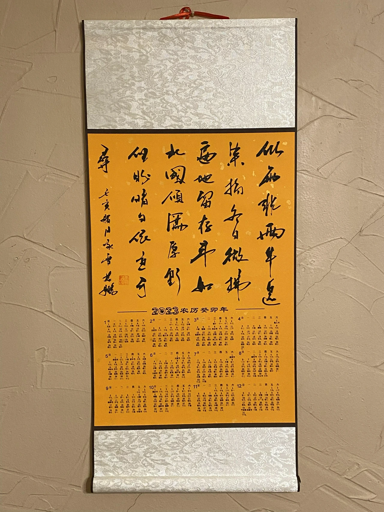
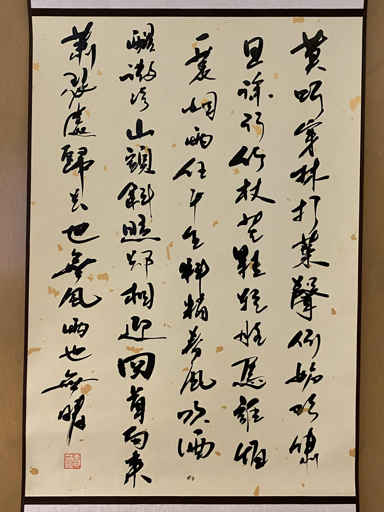

地方与日常生活
The Address Book
一个值得重访的问题：普通的地址，能告诉我们多少关于归属、记忆与权力的事情？
分享 / 个人手记
阅读、聆听、动手与看球。这里整理科研之外的兴趣，也记下一些值得关注和聆听的细节。
01 / 影像手记
书法是我一直保持的爱好，也是分享文化的一种方式。这三张照片来自我的个人相册，于 2023 年 3 月 29 日发布，并在 LinkedIn 上分享。
日历挂轴、横幅习作与诗词立轴，是三种处理笔墨与留白的方式。在技术工作之外，书法让我以另一种节奏保持专注：感受字形、行气，以及反复练习的过程。

手写的文字位于金色日历上方。装裱成轴之后，一件日常用品与一份书写练习，就留在了同一个画面里。

词句沿竖行展开。可以留意字形大小的变化，以及饱满的笔画与轻盈连笔之间的对照。
文字从右至左阅读。横向展开的幅面，让行距与留白也参与构图，和单个笔画的起伏相互呼应。
照片来自我的个人书法相册 · 发布于 2023 年 3 月 29 日 · 点击照片可查看大图。
相册背后的动态02 / 书架
社会科学、历史、人文与心理学，是我理解世界的另一种方式。这里将收藏的书籍与阅读时可以带着的问题放在一起。
地方与日常生活
一个值得重访的问题：普通的地址，能告诉我们多少关于归属、记忆与权力的事情？

历史与传记
一个值得重访的问题：如何区分历史人物本身，与后人不断讲述的故事？

教育与社会
一个值得重访的问题：围绕教育的期待，如何塑造学习与成就之间的关系？

人物与艰难选择
一个值得重访的问题：时间、不确定性与责任交汇时，人们如何做决定？
03 / 聆听室
古典音乐提供了另一种细致观察的方式。这里的笔记给出聆听线索：一种管弦乐织体、一个乐句或一次速度变化，邀请你进一步留意声音。